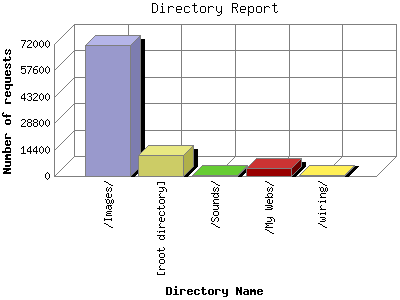

The Directory Report analyzes accesses to this web site's directories. This information can be useful in determining the most requested areas.
This report shows results with at least 0.010000 percent of the total bytes. This report is sorted by amount of bytes transferred.

| Directory Name | Number of requests | Percentage of the bytes | |
|---|---|---|---|
| 1. | /Images/ | 71,479 | 67.70% |
| 2. | [root directory] | 11,703 | 15.38% |
| 3. | /Sounds/ | 615 | 15.2% |
| 4. | /My Webs/ | 4,496 | 1.53% |
| 5. | /wiring/ | 643 | 0.37% |
This report was generated on April 3, 2004 00:36.
Report time frame December 11, 2003 00:13 to April 2, 2004 23:56.
| Web statistics report produced by: | |
| analog 5.1 | Report Magic for Analog 2.10 |